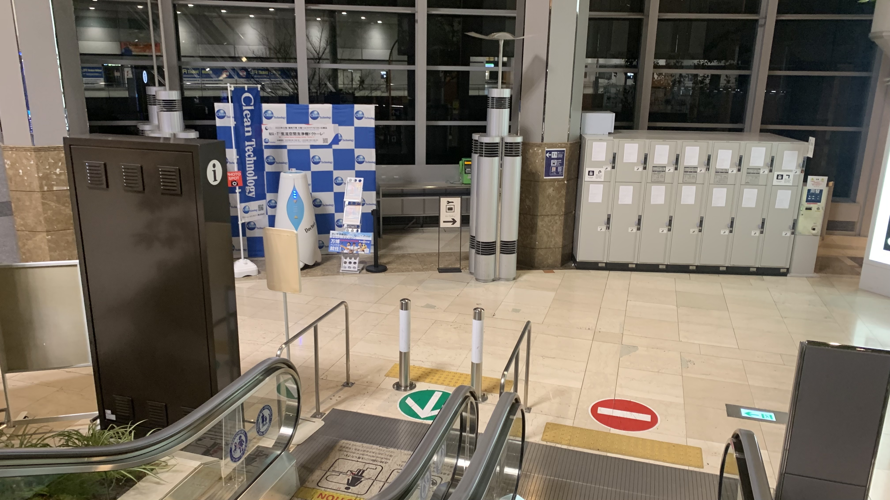
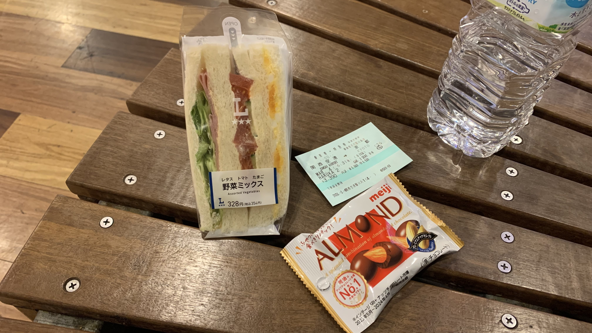
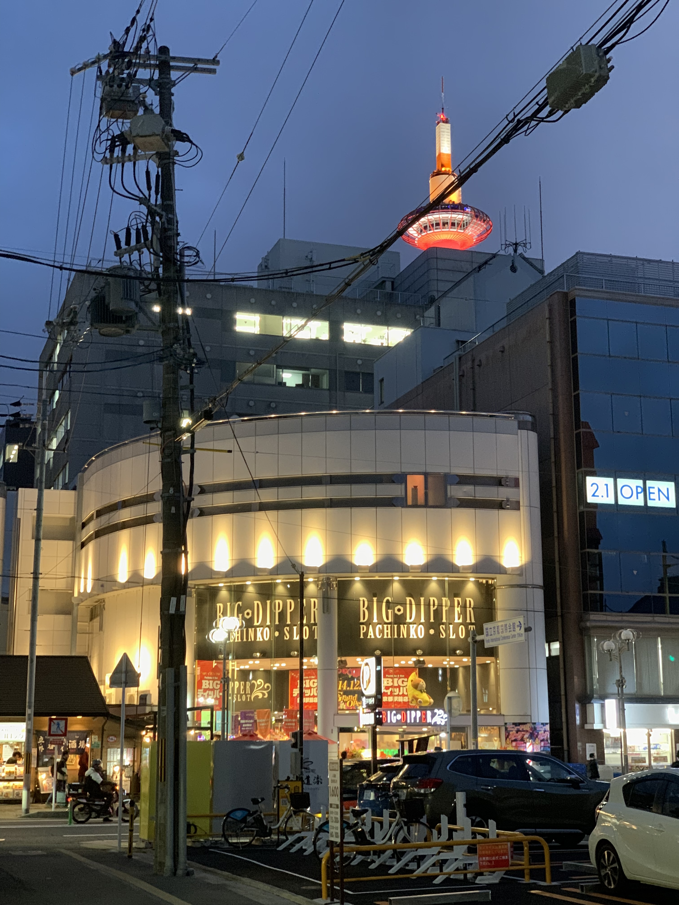
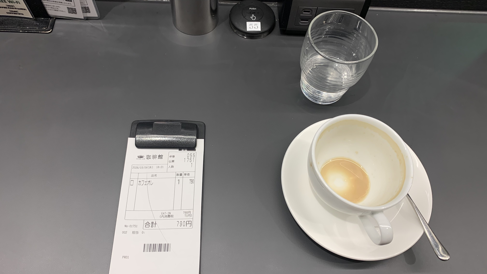
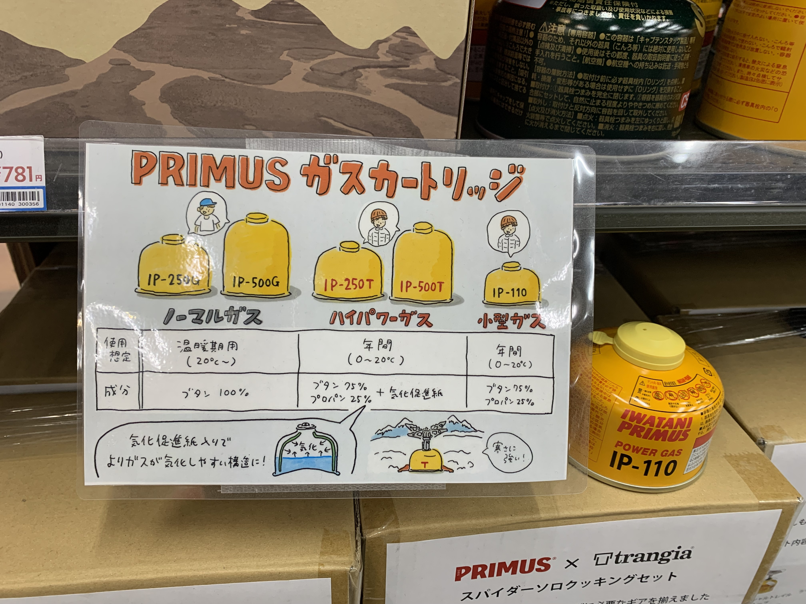

T-Day 000｜抵達京都
早上五點，被睡袋熱醒。把睡袋收起來後又躺了一下。
商場樓下開始有點人聲鼎沸的跡象，應援機器人的音量比幾個小時前又更大聲更賣力了。
不確定昨晚究竟算不算睡著，我想這輩子都不會忘記這首中日龍應援曲。

請幫這個機器人加薪啊。

第一班Haruka是六點半發車，五點半來買票，第一次見到不用排隊的大場面。

早餐又是Lawson。

商場裡面其實有個24小時休息處，只要付幾百塊台幣就能享受裡面的設施，還能睡覺。
想想跟1600日幣的寄物櫃費用也相差無幾。
吃完早餐，搭上第一班HARUKA。

不知不覺到了京都。
民宿在距離車站350公尺處，過個馬路就到，相當便利。
前台員工一邊介紹環境，一邊隨口問我背包上的安全帽是做什麼用的？
我說我明天要騎自行車去巴黎。
「誒～～？」
情緒價值很足的反應😂

房間雖小，廚房衛浴都乾乾淨淨。維持得很好。
拍完這張照片，把裝備們從旅行袋轉移到兩個馬鞍袋後，我就昏睡了。

一覺醒來天空已是這顏色。
先到轉角咖啡廳喝杯咖啡上傳日誌。

咖啡是很普的咖啡，民宿喝是免費的。
要早點改掉這個習慣。
接著到對面的Yodobashi 採購瓦斯罐和露營小刀。

介紹得真仔細。根據這兩天吃超商的便利感，我只買了一罐IP-110。

本想去結帳，又被這些即食包吸引。
也許用得上？🤔

發現攜帶廁所。
這東西真的很重要。畢竟是乾淨的國家，在日本隨地大小便會受到良心的譴責。
小刀收在櫃子裡，跟店員說要哪一款，他會打開櫃門在盒子上面貼號碼牌，結帳時拿著相同的號碼牌到收銀台領刀。
因為我說要買單了，他就帶著刀陪我走到櫃檯交給收銀員打包。全程是拿不到刀子的，這服務相當安心。

買完後過馬路到Sukiya吃了小碗套餐。
750日圓。跟剛剛的那些乾燥飯價錢差不多。
不知道為什麼這次頗喜歡京都，天空和樹和建築的顏色造型都很有特色、很好看。

回到民宿發現櫃檯的展覽海報。
明天就要領車出發了，有點緊張。
今日花費： 寄物櫃 800、早餐 520、咖啡 790、晚餐 750、綠茶 149、HARUKA 關西空港-京都 3390、石井スポーツ 4810